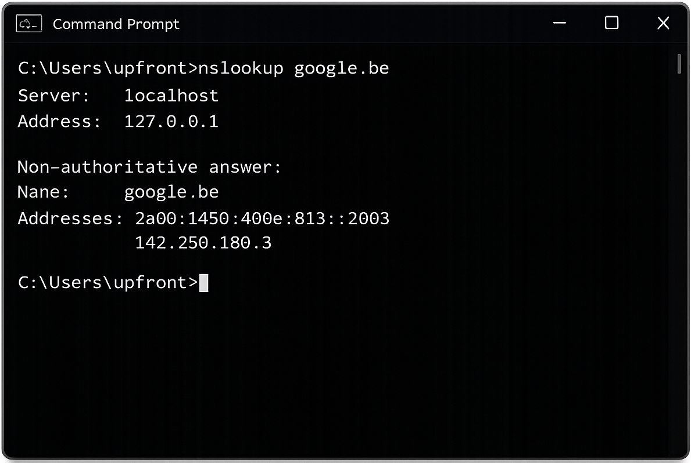

Tutorial – Network / Security
This check verifies that external DNS resolution works correctly for internet access and public services.
External DNS issues can cause:
Open CMD or PowerShell.
Run the following command:
nslookup google.be
Verify that:

Reliable external DNS is required for internet and cloud connectivity.